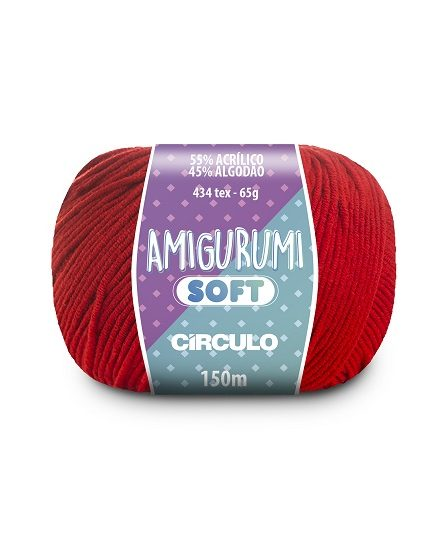

Linha Amigurumi Soft
O Amigurumi Soft é um fio que veio para compor a família da linha Amigurumi. Com uma composição diferenciada, 55% acrílico e 45% algodão, e 434 tex, ele garante peças diferenciadas e com um toque sem igual. As 60 cores diversificadas da cartela foram especialmente desenvolvidas para esse fio.
Dados técnicos
- Fio: 434 tex
- Composição: 55% Acrílico e 45% Algodão
- Comprimento e Peso: 150 m e 65 g
- Agulhas para crochê: 2,0 mm a 4,0 mm
- Agulhas para tricô: 2,5 mm a 4,5 mm
- Agulha de tapeçaria – sugestão n° 16.00
- Quantidade de Cores: 60
Preço: R$12,00
Comprar